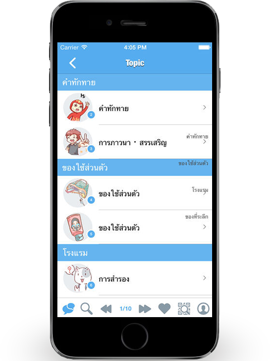
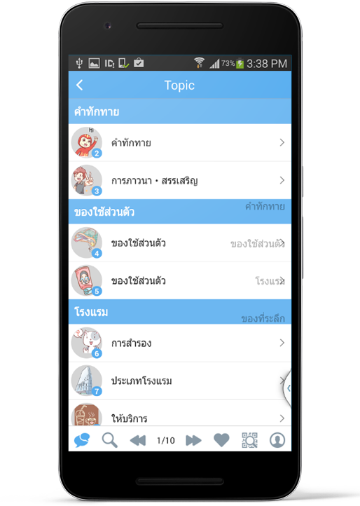

In Apple Store

In Google Play
FREE Japanese phrase learning app on Androids, iPhones and tablets for Thai speakers. You can talk to Japanese people with this app "WA-TransTJ(TLS LITE)" when you travel Japan.